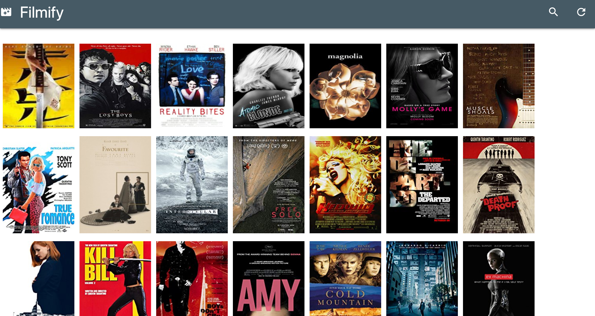

Filmify
Customizable Media Search & Selection App

Filmify provied a great opportunity for me to take a project from ideation to MVP delivery. I designed and executed the build of a uniquely tailored search application that integrated database and IMDb API queries in a truncated timeline.
The tech stack I utilized for this project included Node.js live-server, React, Materialize CSS, MongoDB and Mongoose.